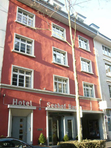
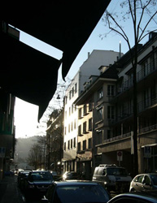
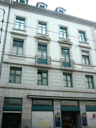
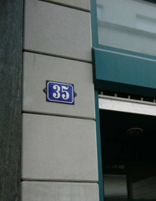
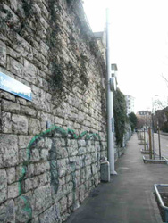
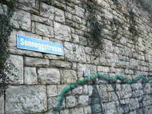
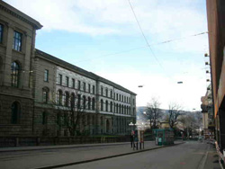
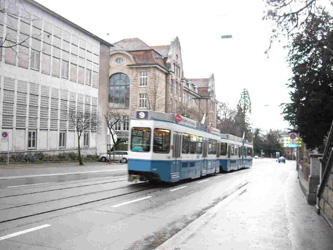

ホテル・Seehofは、さきほどのBellerivestrasseからチューリヒ中心部に向かう途中、さっきの江ノ島通りから右に入ったところにあります。

まだSeehofというホテルが残っていました！これは、チューリヒに行ったら泊まるしかありませんね～
ツァラはここに、1919年の1月頃まで滞在していました。
それから、Seefeldstrasse 35のKatzさんのところへ行きます。このSeefeldstrasseも、Seehofのすぐ裏の通りで、ツァラはこの界隈が気に入っていたようです。たしかに、都市の喧騒からは少し離れて、こざっぱりと感じのいい閑静なところで、住みやすそうです。
  
最後に、ツァラが一時期行っていた私立学校のあるSonneggstrasse。
ここは、湖から遠くはなれて、大学よりもさらに山側、というか丘の上にあるところです。このへんはかなり高級っぽい感じです。
 

もう当時の建物は残っていませんでした。真ん中にある線路はTramwayの線路。チューリヒでは、路面電車が主要な交通機関です。

以上でツァラゆかりのチューリヒめぐりは終わりです。
ほんとに、こざっぱりして、住みやすそうないい街でした。
このまま… →キャバレー・ヴォルテールを見る（準備中）
→Kunsthaus Zurichのダダ資料室を見る（準備中）
|